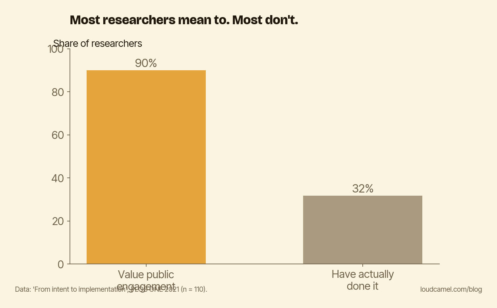

You mean to, and you won't: the intention gap in research visibility
You plan to promote your own work. Really, you do. Just not this week. This week is teaching, the grant, the revisions. Next week, maybe.
That is the do-it-myself position, and it sounds reasonable. The data on what happens when people leave it to “when I have time” is not reasonable at all, and that is what this post is about. The fix is not more discipline. It is a prompt that comes from outside you.
Almost everyone intends. Almost nobody does.
A 2021 study in PLOS ONE tracked researchers moving from intent to actual implementation in public engagement. Roughly 90% of researchers viewed public involvement positively. Only 31.8%, that is 35 of 110, had actually done it.

The chart above shows the size of the gap. Nine in ten value it. Three in ten do it. That is not a few stragglers falling behind. That is most of the people who believe in the thing not doing the thing.
The reason they gave was the obvious one: time. Engagement takes time away from research. There is always a deadline that outranks it, because outreach is important but never urgent, and important-but-not-urgent is exactly the category that spare time is supposed to cover and never does.
This is not unique to one survey. Wolf and colleagues (2019), surveying astronomers and physicists about education and public outreach, found the same thing. Lack of time is the main deterrent, and there is a wide gap between the activities researchers say they value and the ones they actually do. The pattern holds across fields. People mean to. The meaning-to does not convert.
The thing that actually moved the needle
Here is the part that matters for what you do next. In the 2021 study, the strongest predictor of actually doing public engagement was not enthusiasm, seniority, or believing in it harder. It was an external or institutional prompt, something outside the researcher that said now. The odds ratio was about 6.36. People who got an external trigger were roughly six times more likely to act than people left to their own initiative.
Read that again, because it reframes the whole problem. The variable that separated the doers from the intenders was not internal. It was a prompt.
Why willpower is the wrong tool
The instinct, when you notice you are not doing something you value, is to resolve to want it more. Try harder. Be more disciplined. But the gap between “I value this” and “I did this” is not a character flaw, and more willpower does not close it. It is the predictable output of leaving a non-urgent task to spare time that never arrives. You are not failing a motivation test. You are losing a scheduling fight you did not know you were in, every week, to whatever is louder.
What closes the gap is changing the question. Not “can I find the motivation today?” but “did the prompt fire, and did I respond?” A recurring external trigger turns visibility from a thing you have to summon into a thing you react to. (A standing system, the kind Loud Camel runs, is one way to supply that trigger, so you are not the one who has to remember.) The point is that the trigger lives outside you. That is the whole mechanism. The 6.36 was not measuring grit.
Do this this week
Do not trust your future motivation. It has a track record, and the track record is the 32%.
Build the trigger instead. Put one recurring prompt somewhere you cannot ignore it, your calendar, a weekly reminder, anywhere that interrupts you on a schedule. Make it specific: one visibility action for one paper. A post, an email to someone who would cite it, a plain-language summary. Then treat the prompt, not your enthusiasm, as the thing that makes it happen. The enthusiasm was never going to show up on its own, and now it does not have to.